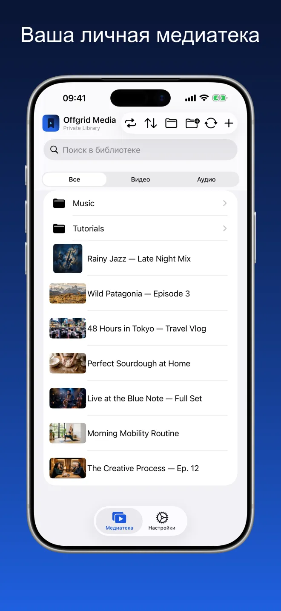
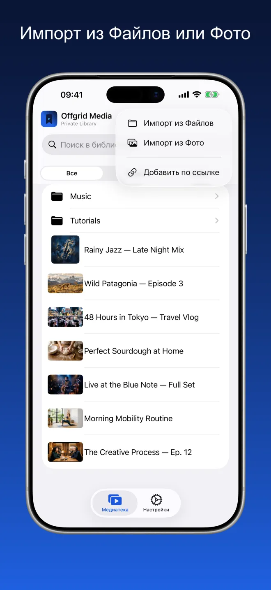
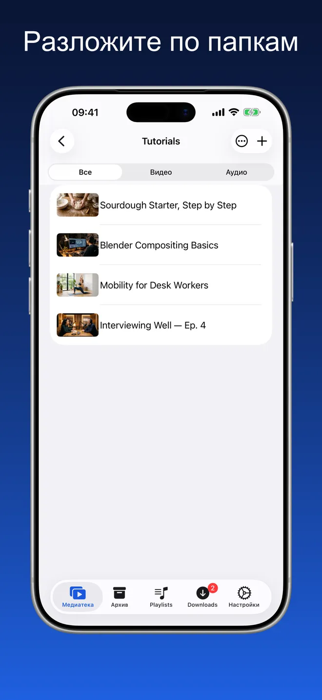
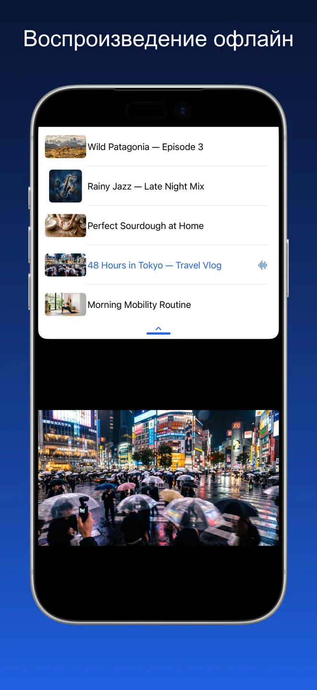
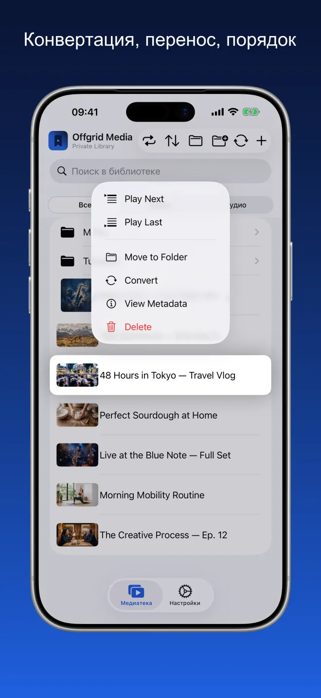
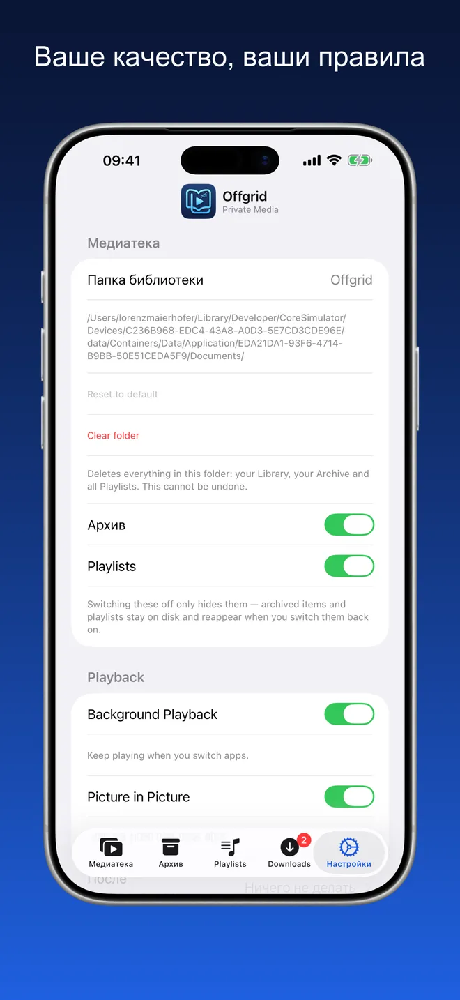

Offgrid Media · Личная медиатека
Всё, что вы храните,
офлайн.
Добавляйте видео и аудио, которые у вас уже есть, — из Файлов, из Фото или по ссылке, которую вы вправе хранить, — и слушайте и смотрите всё офлайн в одном аккуратном месте.
Попробуйте. Сети нет — медиатека всё равно играет.

Одно аккуратное место для ваших собственных медиафайлов
Папки, поиск и фильтр по видео или аудио. Миниатюры берутся из самого файла, обложки и метаданные сохраняются.





Импорт, порядок, воспроизведение
Импорт из Файлов или Фото
Разложите по папкам
Воспроизведение офлайн
Настоящий плеер, а не папка с файлами
Всё, что ниже, работает без сети.
Импорт из Файлов и Фото
Добавляйте видео и аудио из iCloud Drive, с устройства или из медиатеки Фото. Всё попадает в вашу библиотеку и сразу готово к воспроизведению.
Порядок по-вашему
Создавайте папки, перемещайте объекты между ними и ищите по всему, что вы сохранили. Фильтруйте по видео или аудио, когда нужно сосредоточиться.
Создано для офлайна
Всё, что попало в библиотеку, остаётся на вашем устройстве. Без буферизации, без интернета, без потоковой передачи откуда бы то ни было.
Настоящий плеер
Воспроизведение по порядку или вперемешку, продолжение с того же места, очередь и «Картинка в картинке», пока вы работаете в других приложениях. Обложки и метаданные сохраняются.
Фоновое аудио
Слушайте дальше, переключая приложения или блокируя экран.
Выберите качество
Задайте предпочитаемое качество один раз в настройках — наилучшее доступное, 720p, 480p, 360p или только аудио.
Без аккаунта. Без рекламы. Без слежки.
Offgrid Media хранит всё локально на вашем устройстве. Ничего не выгружается, ничем не делится, аккаунт не нужен.
Нечего собирать, потому что некуда отправлять
У Offgrid Media нет аккаунта и нет собственного сервера. Манифест конфиденциальности в App Store заявляет: никакого отслеживания и никаких собираемых данных.
Частые вопросы
Нет. Всё, что попало в медиатеку, лежит на вашем устройстве и воспроизводится без сети. При воспроизведении ничего не транслируется, поэтому нет ни буферизации, ни соединения, которое может оборваться.
В папке на вашем устройстве, внутри хранилища приложения. В настройках можно выбрать другую папку медиатеки, а поскольку приложение поддерживает приложение «Файлы», те же файлы видны и там. Ничего не выгружается, облачной синхронизации нет.
Импорт из «Файлов» (iCloud Drive или устройство), импорт из медиатеки «Фото» или добавление по ссылке, которую вы вправе хранить. Импорт — основной путь; ссылка — второстепенное удобство.
Да. Включите фоновое аудио в настройках — воспроизведение продолжится при переключении приложений и блокировке экрана, с названием, обложкой и управлением на экране блокировки и в пункте управления. Видео можно вывести поверх других приложений в режиме «Картинка в картинке».
Нет. У Offgrid Media нет аккаунта, сервера, аналитики и сторонних SDK. Манифест конфиденциальности в App Store заявляет: никакого отслеживания и никаких собираемых данных. Единственное запрашиваемое разрешение — уведомления.
Нисколько. Без подписки, без встроенных покупок, без рекламы.
Добавляйте только тот контент, который вы вправе хранить. Соблюдение условий использования любой платформы и применимого законодательства — исключительно ваша ответственность.
Ваша медиатека. Ваше устройство. Сигнал не нужен.
Offgrid Media бесплатна, для iPhone и iPad, на 11 языках.